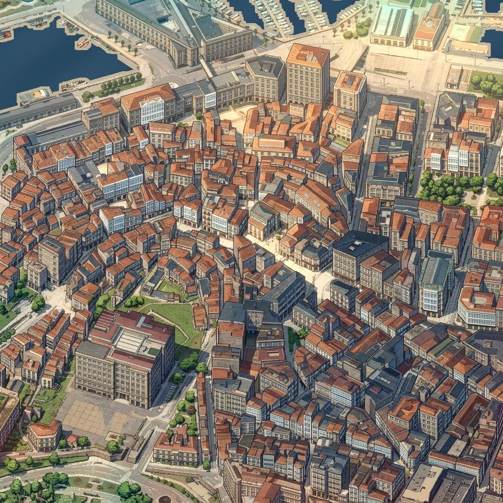
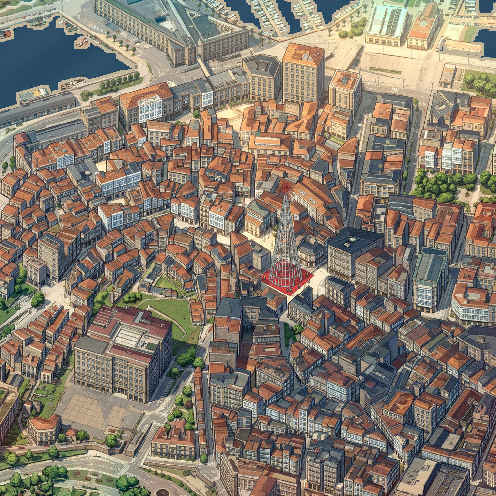
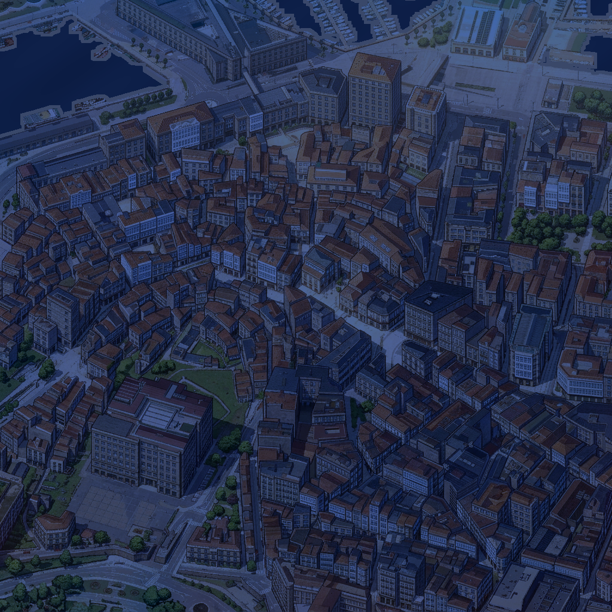
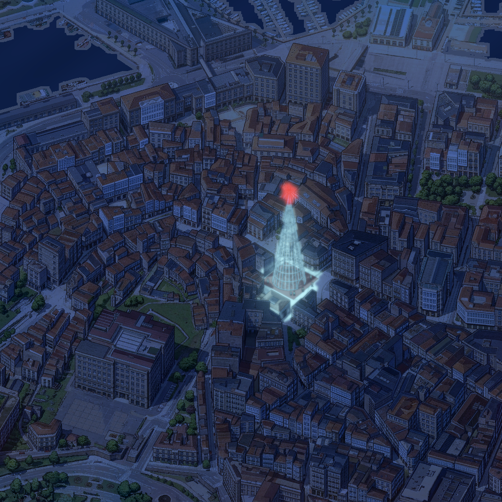

Método: recorte del bloque ensamblado → el modelo pinta el árbol dentro, mismo estilo → se compone con máscara suave (fuera queda el bloque intacto). Sin croma ni recorte pegado.
pipeline/arbol_porta_sol.py: el intento anterior pintaba el árbol fuera de la Porta do Sol real y la máscara lo recortaba, dejando solo un parche de tejados sin árbol; ahora se recorta un cuadro de 350 px centrado en la plaza (georreferencia del lienzo, 42.23807 -8.72581), se amplía a 1024 px, y se compone con una máscara que sale del propio cambio de píxeles, nunca de una zona fija. 2) El árbol pintado era un abeto genérico: ahora se pasa assets/foto-arbol.jpg (la estructura real) como referencia de contenido, junto con la descripción de su forma — celosía metálica cónica con tiras de luz, sin ramas, estrella roja radial, carpa roja en la base. De noche, pipeline/arbol_noche.py pinta el tinte azul oscuro de siempre (medido del par día/noche sin árbol) y añade una capa de luz cian/blanca + estrella roja sacada de la propia silueta de la celosía (assets-prueba/arbol-luz-sprite.png, pensada para mix-blend-mode: screen + una animación de opacity para el parpadeo). Fuera del contorno del árbol, el día es bit a bit igual al original.


